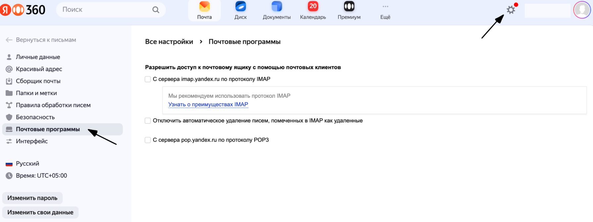
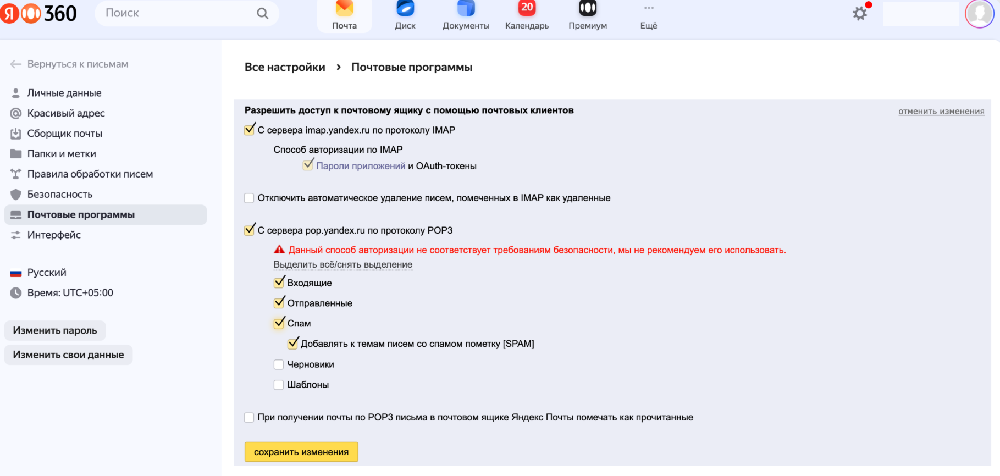
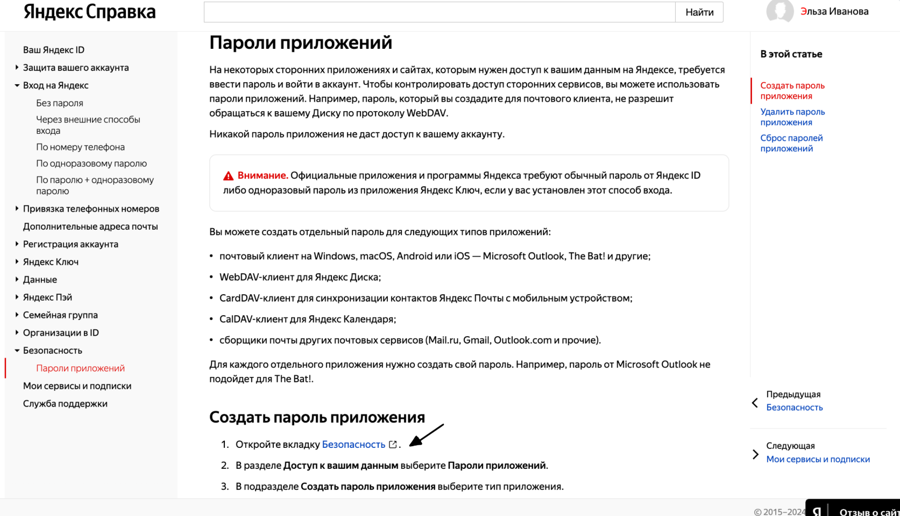

Возможности и особенности подключения коннекторов
Страница описывает возможности коннекторов. Также для некоторых коннекторов требуются дополнительные действия на стороне сервиса для подключения.
1С
Доступные операции
Нажмите, чтобы раскрыть
Журнал регистрации
1c-eventlog-filter-values
Получение списка допустимых значений для фильтрации журнала регистрации (пользователи, события, метаданные, приложения, компьютеры)
1c-eventlog-query
Получение записей журнала регистрации 1С с фильтрацией по периоду, уровню, пользователям, событиям и другим параметрам. Возвращает данные в формате JSON
Выполнение кода и запросов
1c-execute-code
Выполнение произвольного кода 1С:Предприятие на сервере. Код имеет доступ к переменной __Возврат, которую обязательно нужно установить — её значение вернётся как результат. Требует подтверждения пользователя, если код может изменять данные
1c-execute-query
Выполнение запроса 1С и получение результата в различных форматах
Метаданные
1c-get-metadata-structure
Получение структуры объекта метаданных: поля, табличные части, владельцы, предопределённые элементы, значения перечислений
1c-list-metadata-objects
Получение списка объектов метаданных конфигурации с возможностью фильтрации по типу и имени
Валидация
1c-validate-query
Проверка синтаксиса запроса 1С без выполнения
Особенности подключения
-
Если у вас нет собственного MCP-сервера — добавьте предустановленный коннектор.
При этом подключение возможно только к одной базе 1C. -
Если у вас есть собственный MCP-сервер — создайте собственные MCP-коннекторы. Подробнее.
При этом необходимо на каждую базу 1C создать отдельный коннектор.
Типовые проблемы при подключении 1С через MCP-сервер
Нажмите, чтобы раскрыть
Ниже приведены типовые проблемы, с которыми можно столкнуться при подключении 1С через MCP-сервер, их причины и способы решения.
Проблемы с режимом работы базы 1С
| Проблема | Причина | Как диагностировать | Решение |
|---|---|---|---|
Невозможно опубликовать HTTP-сервис |
База работает в файловом режиме (.1CD) |
Предприятие → Администрирование → Параметры системы → Режим работы |
Конвертировать базу в клиент-серверный вариант (SQL Server, PostgreSQL, Oracle) |
Публикация завершается ошибкой |
Отсутствует сервер 1С:Предприятия |
При публикации требуется указание SQL-сервера |
Установить сервер 1С или перенести базу на существующий сервер |
Проблемы с версией платформы 1С
| Проблема | Причина | Как диагностировать | Решение |
|---|---|---|---|
Нет пункта «Расширения конфигурации» |
Версия платформы ниже 8.3.10 |
Предприятие → Сервис → О программе |
Обновить платформу 1С до актуальной стабильной версии |
Нет вкладки «HTTP-сервисы» при публикации |
Версия платформы ниже 8.3.6 |
Конфигуратор → Администрирование → Публикация на веб-сервере |
Обновить платформу 1С до версии 8.3.6 или выше |
Расширение не работает корректно |
Несовместимость версии расширения и платформы |
Логи 1С, ошибки при вызове HTTP-сервиса |
Обновить платформу и расширение до актуальных версий |
Проблемы с веб-сервером
| Проблема | Причина | Как диагностировать | Решение |
|---|---|---|---|
Ошибка публикации на веб-сервере |
Веб-сервер (Apache/IIS) не установлен |
В списке служб Windows нет Apache/IIS |
Установить веб-сервер (см. инструкцию по установке Apache 2.4) |
Веб-сервер не запускается |
Конфликт портов, ошибка в конфигурации |
Служба Apache/IIS не стартует, логи веб-сервера |
Проверить логи, освободить порт 80/443, исправить конфиг |
HTTP-сервис недоступен после публикации |
Веб-сервер работает, но публикация не прошла |
Браузер возвращает 404 на |
Перепубликовать базу от имени администратора, проверить имя публикации |
Доступ только по HTTP, нет HTTPS |
Не настроен SSL-сертификат |
URL начинается с |
Получить и установить SSL-сертификат, настроить HTTPS в веб-сервере |
Проблемы с доступом из интернета
| Проблема | Причина | Как диагностировать | Решение |
|---|---|---|---|
URL недоступен извне |
Сервер в локальной сети без проброса портов |
|
Настроить проброс портов на роутере или reverse proxy (nginx/Apache) |
Нет статического IP |
Динамический IP у сервера |
IP меняется после перезагрузки |
Заказать статический IP у провайдера или использовать DynDNS |
Блокировка фаерволом |
Порт 80/443 закрыт |
|
Открыть порт в фаерволе Windows/iptables |
1С:Фреш (SaaS) |
Платформа не позволяет публиковать свои HTTP-сервисы на внешнем веб-сервере |
— |
Уточнить у провайдера 1С:Фреш наличие API для интеграции; рассмотреть переезд на self-hosted |
1С:Линк |
Доступ только через прокси 1С |
База размещена на 1С:Линк |
Использовать API 1С:Линк или запросить публикацию через поддержку |
Проблемы с расширением MCP-сервера
| Проблема | Причина | Как диагностировать | Решение |
|---|---|---|---|
Расширение не подключается |
Файл .cfe повреждён или несовместим |
Ошибка при подключении в Конфигураторе |
Скачать актуальную версию расширения, проверить совместимость |
HTTP-сервис не появляется после подключения |
Расширение не активировано, нет прав |
В списке HTTP-сервисов нет |
Перезапустить 1С, проверить права пользователя на расширение |
Ошибка авторизации в HTTP-сервисе |
Неверный логин/пароль, нет прав у пользователя |
Браузер запрашивает пароль, затем возвращает 401/403 |
Создать отдельного пользователя 1С с правами на HTTP-сервис |
|
Ошибка внутри расширения |
Логи 1С, журнал регистрации |
Включить логирование в расширении, проверить логи |
Часто задаваемые вопросы по коннектору 1С
Нажмите, чтобы раскрыть
| Вопрос | Комментарий Продукта |
|---|---|
С какими конкретно конфигурациями 1С работает коннектор? |
Коннектор к 1С унифицированный, работает с различными конфигурациями. Рекомендуемые версии, с которыми работает коннектор — 8.3.6+ (в более ранних версиях нет вкладки «HTTP-сервисы» при публикации и нет пункта «Расширения конфигурации»). |
Работает ли он с доработанными конфигурациями? |
Коннектор к 1С унифицированный, работает с различными конфигурациями, включая доработки. Коннектор работает с базой 1С по запросу к ней через разработанные инструменты коннектора (файл расширения необходимо установить по предоставляемой инструкции). |
Нужна ли публикация базы 1С наружу? |
В виде поставки SaaS необходима публикация базы наружу — к базе должен быть выход в интернет, либо прописаны белые IP-адреса до Cowork. Настройка в 1С (подробнее в предоставляемой инструкции):
Настройка в Cowork:
|
Через что идёт подключение: API, OData, расширение, обработка, веб-сервис? |
Коннектор соответствует принципам стандарта MCP (спецификация): https://modelcontextprotocol.io/specification/2025-11-25 По такому же стандарту можно подключить любой другой коннектор, имея свой MCP-сервер (прорабатываем возможность предоставлять MCP-сервер в момент создания коннектора, чтобы расширить воронку пользователей, которые могут подключить необходимый open source коннектор). |
Кто настраивает права доступа к данным 1С? |
Авторизация пользователя в коннектор происходит по кредам из 1С. Права доступа в коннектор 1С используются те, которые соответствуют 1С. |
Можно ли ограничить доступ только чтением? |
Пользователь может настроить доступ к конкретному инструменту коннектора (требовать подтверждение / не использовать / использовать). Т.е. можно ограничить запись, поставив к инструменту настройку «отключен» или «требует подтверждения» (будет запрашивать у пользователя действие по инструменту). |
Можно ли разрешить создание черновиков, но запретить проведение? |
Как таковых черновиков в 1С, насколько я знаю, нет. Если такой функционал существует в какой-то конфигурации, то можно задействовать через агента (не могу точно сказать). |
Как обрабатывается сопоставление номенклатуры? |
Информация используется из базы данных — фактически каждый текстовый запрос пользователя преобразуется в запрос к базе 1С через инструменты, написанные кодом 1С. Аналогия — это SQL-запросы. Если необходимо сопоставить номенклатуру, то можно использовать дополнительно и внешнюю таблицу (не из 1С) для сравнения — таким образом будет использована информация из 1С и пользовательские данные. |
Что происходит, если ИИ не уверен в совпадении позиции? |
Как и человек, попробует сформировать гипотезу ответа и предоставить обоснования, если пользователь в явном виде не задал действия / границы размышления модели. |
Можно ли подключить тестовую копию базы? |
Да, можно — механизм описан в п. 1–5. |
Подготовка к добавлению предустановленного коннектора 1C
1. Подключите расширение в базу
-
Подключите расширение через «Управление расширениями конфигурации» в Предприятии или в Конфигураторе.
-
Расширение — в файле mcp_dev.cfe (Чтобы скачать файл, откройте коннектор 1C в разделе
 Администрирование → Коннекторы, нажмите
Администрирование → Коннекторы, нажмите  → Настроить, а затем Скачать файл расширения и инструкцию).
→ Настроить, а затем Скачать файл расширения и инструкцию). -
Перезапустите сеанс, чтобы расширение применилось.
2. Опубликуйте HTTP-сервис
Требуется установленный веб-сервер. Если его ещё нет — смотри ниже главу установка веб-сервера Apache 2.4.
| Запускайте Конфигуратор от имени администратора. |
-
Зайдите в Администрирование → Публикация на веб-сервере.
-
Задайте имя публикации (оно станет именем базы в URL) и каталог публикации.
-
На вкладке HTTP-сервисы включите флаг «Публиковать HTTP-сервисы расширений по умолчанию» (выбрать конкретный сервис расширения нельзя).
-
Опубликовать.
3. Проверьте работоспособность
Откройте в браузере (подставьте сервер и имя базы):
http://[сервер]/[база]/hs/mcp/healthПосле ввода логина/пароля 1С должен вернуться {"status": "ok"}.
Дополнительно: установка веб-сервера Apache 2.4
-
Скачайте дистрибутив: https://www.apachelounge.com/download/
-
Распакуйте (например, в C:\Apache24).
-
Зарегистрируйте службу — в папке Apache24\bin от имени администратора:
httpd.exe -k install -
Запустите службу (в оснастке services.msc или
httpd.exe -k start).
Добавление предустановленного коннектора 1C
Если вы сделали все подготовительные действия, можете приступать к подключению предустановленного коннектора 1C.
-
В разделе
Администрирование → Коннекторы, откройте коннектор 1C и нажмите → Настроить. -
Укажите:
-
Название.
-
Описание — коротко опишите возможности и инструменты коннектора, какие основные задачи он решает. По этим клюевым фразам ИИ-агент будет понимать, что необходимо подключить данный коннектор. Например, Добавь событие в календарь — для коннектора календаря. Описание отображается в карточке коннектора.
-
Публичный URL HTTP сервис 1C — вставьте URL опубликованной базы 1C.
-
Тип аутентификации — выберите тип аутентификации, используемый в вашей 1C.
-
Инструкция авторизации — Укажите инструкцию-подсказку по авторизации в коннекторе. Инструкция будет видна пользователям при наведении на иконку информации рядом с кнопкой авторизации в коннекторе.
-
-
Нажмите Добавить или Добавить и войти в аккаунт, чтобы добавить и одновременно авторизоваться в коннекторе.
amoCRM
Доступные операции
Нажмите, чтобы раскрыть
-
Всплывающая карточка звонка.
-
Новый контакт.
-
Новая задача.
-
Новый покупатель.
-
Заявка в Неразобранном.
-
Обновить покупателя по ID.
-
Новое сообщение.
-
Получить покупателя по ID.
-
Найти задачу.
-
Обновить элемент списка.
-
Получить связи сущности.
-
Новая сделка.
-
Звонок в Неразобранном.
-
Новая компания.
-
Обновление сделки по ID.
-
Найти сотрудника по логину (email’y).
-
Поиск контакта.
-
Завершить задачу.
-
Получить элементы списка.
-
Добавить элемент в Список.
-
Запись звонка.
-
Новое примечание.
-
Выбор ответственного пользователя.
-
Добавить контакты.
-
Обновить задачу по ID.
-
Поиск компании.
-
Найти лид.
-
Получить все сделки контакта.
-
Обновить контакт по ID.
-
Получить элемент списка по ID.
-
Всплывающая карточка звонка (виджет).
BotHelp
Доступные операции
Нажмите, чтобы раскрыть
-
Отправить сообщение подписчику.
-
Обновить кастом поля у подписчика.
Gmail
Доступные операции
Нажмите, чтобы раскрыть
-
Отправить письмо.
-
Создать черновик письма.
-
Проверка только по одному входящему из почты.
Google Calendar
Доступные операции
Нажмите, чтобы раскрыть
-
Создать подробное событие.
-
Обновить событие.
-
Повторяющиеся события.
-
Повторяющиеся события (весь день).
-
Удалить событие.
-
Создать календарь.
-
Быстрое добавление события.
-
Поиск события.
-
Добавить участников на мероприятие.
Google Drive
Доступные операции
Нажмите, чтобы раскрыть
-
Добавить файл.
-
Изменить метаданные файла по ID.
-
Добавить комментарий к файлу.
-
Обновить комментарий.
-
Создать папку.
-
Создать разрешение для файла.
-
Создать копию файла.
-
Создать пользовательский запрос API.
-
Переместить файл.
Huntflow
Доступные операции
Нажмите, чтобы раскрыть
-
Поиск соискателя.
-
Информация о соискателе по ID.
-
Обновить соискателя.
-
Получить вакансии по статусу.
-
Обновить вакансию.
-
Добавьте соискателя или ответ соискателя к вакансии.
-
Изменить статус приема на работу для соискателя.
-
Создать соискателя.
Kaiten
Доступные операции
Нажмите, чтобы раскрыть
-
Создать карточку.
-
Обновить карточку.
-
Найти карточку по названию.
-
Получить карточку по ID.
-
Добавить комментарий к карточке.
Mail.ru
Доступные операции
Нажмите, чтобы раскрыть
-
Отправка письма по SMTP.
Особенности подключения
-
Войдите в свою почту Mail.ru через браузер на вашем устройстве.
-
Откройте Настройки → Все настройки → Безопасность.
-
Найдите раздел Пароли для внешних приложений и нажмите Добавить.
-
Придумайте название для пароля (например, GigaCowork), чтобы потом понять, для чего он.
-
Подтвердите ваш основной пароль от аккаунта Mail.ru.
-
Mail.ru сгенерирует пароль — сразу скопируйте его, он показывается только один раз.
Microsoft Outlook
Доступные операции
Нажмите, чтобы раскрыть
-
Создать событие.
-
Обновить событие.
-
Найти событие по ID.
-
Отправить письмо по ID черновика.
-
Создать черновик письма.
-
Обновить контакт.
-
Создать контакт.
-
Пользовательский запрос API.
-
Найти контакт по ID.
-
Создать и отправить письмо.
-
Найти контакт по адресу электронной почты.
-
Получить вложение письма по ID.
Mindbox
Доступные операции
Нажмите, чтобы раскрыть
-
Создать клиента.
-
Обновить клиента.
-
Поиск клиента.
-
Поиск клиента по ID.
-
Добавить заметку клиенту.
-
Поиск пользователя по Email.
-
Поиск пользователя по ID.
-
Создать заказ.
-
Обновить заказ.
-
Поиск заказа.
-
Обновление цен (бета-версия).
-
Обновление запасов (бета-версия).
-
Получить ассортимент.
-
Всплывающее уведомление о вызове.
Особенности подключения
Для работы коннектора, в Mindbox необходимо создать операции по каждому инструменту.
Шаг 1. Перейдите в раздел «Кампании»
-
Откройте Mindbox
-
Перейдите в раздел Кампании
Шаг 2. Создайте операцию
-
Нажмите «Создать кампанию» → «Операция»
-
Выберите папку, где будет храниться операция
-
Нажмите «Создать»
Шаг 3. Настройте параметры операции
Выберите точку интеграции
-
Сайт, лендинг, касса, мобильное приложение
-
Можно выбрать несколько точек с одинаковыми настройками
Выберите тип операции
| Тип | Описание |
|---|---|
Стандартная |
Обычная скорость обработки (для большинства задач) |
Приоритетная |
Мгновенная обработка (для авторизации, регистрации, начисления баллов) |
Дополнительные флаги (по необходимости)
-
«Запускает транзакционный сценарий»
-
«Операция требует передачи deviceUUID»
-
«Операция требует передачи секретного сервисного ключа»
-
«Операция возвращает валидационные ошибки»
Шаг 4. Настройте шаги операции
-
Шаги для работы с клиентами.
-
Шаги-действия (зависимые шаги).
Шаги для работы с клиентами
Добавление в базу
| Шаг | Описание |
|---|---|
Зарегистрировать |
Регистрация в ЛК или программе лояльности |
Создать и подписать на рассылки |
Подписка через формы или web-push |
Импортировать |
Создать нового или обновить существующего |
Работа с существующими клиентами
Для авторизованных клиентов (уверены в личности)
-
Получить существующего
-
Редактировать
-
Дополнить
Для неавторизованных клиентов (не уверены в личности)
-
Получить существующего
-
Редактировать (только зону/город)
-
Зарегистрировать или дополнить
Шаги-действия (зависимые шаги)
После выбора типа клиента становятся доступны:
-
Оформление заказа
-
Установка списка товаров (корзина, избранное)
-
Отправка Email или SMS
-
Выдача действий
-
Изменение баланса
| Шаги связаны между собой. Например, шаг «Оформление заказа» доступен только после выбора клиента. |
Шаг 5. Сохраните и получите документацию
-
Нажмите «Добавить»
-
Нажмите «Посмотреть описание» — система автоматически сгенерирует:
-
Описание вызова
-
Форматы передачи данных
-
Тело запроса
-
Примеры вызова и ответа
-
Шаг 6. Отладка и мониторинг
-
Мониторинг интеграции — список операций с количеством ошибок
-
Лог вызовов операций — детализация ошибочных вызовов
-
Включите флаги валидации для анализа ошибок в ответе
Применительно к коннектору в GigaCowork
Коннектор Mindbox, доступный для подключения, поддерживает следующие операции, которые должны быть предварительно настроены в Mindbox:
| Инструмент коннектора | Требуемая операция в Mindbox |
|---|---|
Создать клиента (Sync/Async) |
Операция с шагом «Зарегистрировать» или «Создать и подписать» |
Обновить клиента |
Операция с шагом «Редактировать клиента» |
Получить информацию о клиенте |
Операция с шагом «Получить существующего» |
Создать/обновить заказ |
Операция с шагами «Клиент» + «Оформление заказа» |
Выдать действие |
Операция с шагом «Выдача действий» |
Отправить email-рассылку |
Операция с шагом «Отправка Email» |
Обновить статус линий заказа |
Операция с шагом обновления статуса заказа |
Получить ассортимент |
Операция экспорта товаров |
| Перед подключением коннектора в GigaCowork убедитесь, что в Mindbox созданы соответствующие операции с нужными шагами для каждого инструмента, который планируете использовать. |
RetailCRM
Доступные операции
Нажмите, чтобы раскрыть
-
Создать клиента.
-
Обновить клиента.
-
Поиск клиента.
-
Поиск клиента по ID.
-
Добавить заметку клиенту.
-
Поиск пользователя по Email.
-
Поиск пользователя по ID.
-
Создать заказ.
-
Обновить заказ.
-
Поиск заказа.
-
Обновление цен (бета-версия).
-
Обновление запасов (бета-версия).
-
Получить ассортимент.
-
Всплывающее уведомление о вызове.
Telegram
Доступные операции
Нажмите, чтобы раскрыть
-
Отправить сообщение — Текстовое сообщение в чат/группу/канал.
-
Ответить на сообщение — Reply на конкретное сообщение.
-
Закрепить сообщение — Закрепить сообщение в чате.
-
Удалить сообщение — Удалить сообщение из чата.
-
Создать опрос — Голосование с вариантами ответов.
-
Получить участника чата — Информация об участнике.
-
Дать права администратора — Назначить админа в чате.
-
Заблокировать участника — Забанить пользователя.
-
Разблокировать участника — Разбанить пользователя.
Доступные действия
Особенности подключения
Обмен сообщений GigaCowork с Telegram осуществляется через специального бота. Для авторизации потребуется API-ключ существующего или нового бота.
Создание бота
-
Отправьте боту
@BotFatherкоманду/start. -
Для создания нового бота отправьте команду
/newbot. -
Укажите имя бота — оно будет отображаться для всех пользователей.
-
Укажите имя пользователя (username). Оно должно:
-
Начинаться с символа
@. -
Обязательно заканчиваться на
bot. Пример:youNamebotилиyouName_bot.
-
-
После создания бот предоставит API-ключ — скопируйте его.
Выбор существующего бота
-
Отправьте боту
@BotFatherкоманду/mybots. -
Выберите нужного бота из списка.
-
Запросите API-ключ для подключения.
Важные ограничения
| Ограничение | Описание |
|---|---|
Бот должен быть в чате |
Чтобы отправить сообщение в группу/канал, бот должен быть добавлен в этот чат как участник |
Только цифровой ID |
Все отправки работают только по цифровому ID чата/пользователя. Username (@name) не поддерживается |
Права бота |
В группах боту нужны права на отправку сообщений (проверьте настройки группы) |
Пользователи пишут боту первыми |
Бот не может написать пользователю первым — пользователь должен сначала запустить бота (/start) |
Форматы ID:
| Тип | Формат ID | Пример |
|---|---|---|
Личный чат |
Положительное число |
|
Группа |
Отрицательное число |
|
Супергруппа |
Отрицательное число с |
|
Канал |
Отрицательное число с |
|
Как получить ID чата/группы/пользователя
Способ 1: Через бота @userinfobot (для личных ID)
-
Откройте @userinfobot в Telegram
-
Нажмите
/start -
Бот вернёт ваш цифровой ID
Способ 2: Через бота @getmyid_bot (для групп и каналов)
-
Добавьте @getmyid_bot в нужную группу/канал
-
Бот автоматически отправит сообщение с ID чата
-
Скопируйте ID из сообщения (будет в формате
-1001234567890) -
Удалите бота из чата после получения ID (опционально)
Способ 3: Через веб-версию Telegram
-
Откройте https://web.telegram.org
-
Перейдите в нужный чат/группу/канал
-
Посмотрите на URL в адресной строке:
-
Для личных чатов:
…/c/123456789/…→ ID =123456789 -
Для групп/каналов:
…/c/-1001234567890/…→ ID =-1001234567890
-
Способ 4: Через API (для разработчиков)
Метод: getUpdates URL: https://api.telegram.org/bot<TOKEN>/getUpdates
Отправьте сообщение в чат с ботом, затем вызовите метод — в ответе будет chat.id
Способ 5: Добавить своего бота в группу
-
Добавьте вашего бота в целевую группу/канал
-
Отправьте любое сообщение в группу (упомяните бота или нет)
-
Используйте метод
getUpdatesили посмотрите логи бота — там будет ID чата -
Важно: бот должен оставаться в группе для отправки сообщений
Примеры использования
Требуемые данные: - chat_id: -1001234567890 (цифровой ID группы) - text: "Коллеги, напоминание о совещании в 15:00" Важно: - Бот должен быть добавлен в эту группу - ID должен быть в формате с минусом для групп
Требуемые данные: - chat_id: 123456789 (цифровой ID пользователя) - text: "Здравствуйте! Ваша заявка обработана" Важно: - Пользователь должен сначала запустить бота (/start) - Бот не может написать первым неизвестному пользователю
Требуемые данные: - chat_id: -1001234567890 - question: "Выберите дату встречи" - options: ["Понедельник", "Среда", "Пятница"] - is_anonymous: false (опционально)
Частые ошибки
| Ошибка | Причина | Решение |
|---|---|---|
|
Неверный ID чата |
Проверьте формат ID (с минусом для групп) |
|
Бот не в чате |
Добавьте бот в группу/канал |
|
Нет прав у бота |
Проверьте права бота в настройках группы |
|
Пользователь заблокировал бота |
Свяжитесь другим способом |
|
Бот удалён из чата |
Добавьте бота повторно |
|
Текст не изменился |
Измените содержимое сообщения |
|
Не указан ID |
Передайте цифровой ID в параметрах |
YClients
Доступные операции
Нажмите, чтобы раскрыть
-
Новый клиент.
-
Создать запись на сеанс (для онлайн форм).
-
Найти клиента.
-
Получить рабочие даты салона/сотрудника.
-
Получить свободное время сотрудника в чат.
-
Новая запись.
-
Удалить запись.
-
Изменить запись.
-
Найти запись.
-
Получить записи клиента.
Zoom
Доступные операции
Нажмите, чтобы раскрыть
-
Создать конференцию.
-
Добавить участника конференции.
-
Добавить участника вебинара.
-
Создать вебинар.
Битрикс24 / Bitrix24
Доступные операции
Нажмите, чтобы раскрыть
-
Новый лид.
-
Сделка удалена.
-
Комментарий в таймлайн.
-
Найти сотрудника по ID.
-
Зарегистрировать звонок.
-
Прикрепить запись звонка.
-
Новое сообщение в чате.
-
Обновление товара.
-
Создать элемент универсального списка.
-
Получить контакт по сделке.
-
Найти лид.
-
Новый контакт.
-
Новая компания.
-
Обновление сделки по ID.
-
Скрыть карточку звонка.
-
Найти счёт по ID (Устаревший).
-
Найти продукт.
-
Создание списка лидов.
-
Обновить элемент универсального списка.
-
Добавить счет.
-
Смарт-процесс - найти элемент по ID.
-
Новая сделка.
-
Найти сотрудника по email’y.
-
Найти контакт по ID.
-
Завершить звонок.
-
Найти сделку по ID.
-
Новый товар.
-
Создание списка контактов.
-
Найти компанию.
-
Обновить счет (Устаревший).
-
Найти сделку.
-
Привязать контакт к компании.
-
Найти счёт по ID.
-
Обновить счет.
-
Удалить счет.
-
Удалить дело.
-
Добавление настраиваемого дела.
-
Импортировать сделку.
-
Служба SMS: обновить статус сообщения.
-
Обновить задачу.
-
Создать нового пользователя.
-
Получить стадии канбана по ID группы.
-
Получить сведения о хранилищах.
-
Смарт-процесс - добавить элемент.
-
Обновить дело.
-
Найти дело.
-
Обновление настраиваемого дела.
-
Импортировать компанию.
-
Обновление лида по ID.
-
Найти задачу.
-
Создать рабочую группу.
-
Добавить комментарий к задаче.
-
Создать папку в хранилище.
-
Смарт-процесс - обновить элемент.
-
Добавить дело.
-
Запустить триггер.
-
Импортировать контакт.
-
Найти лид по ID.
-
Добавить задачу.
-
Найти контакт.
-
Создать стадию канбана.
-
Удалить стадию по ID.
-
Добавить файл в хранилище.
-
Смарт-процесс - удалить элемент.
Особенности подключения
Для работы требуется оплаченная подписка сервиса BitrixGPT + Маркетплейс. Также необходимо установить в маркетплейсе Битрикс24 приложение Albato.
Веб-поиск
Доступные операции
Нажмите, чтобы раскрыть
-
Поиск в интернете.
Особенности подключения
Для работы коннектора необходим верифицированный профиль организации в MAX, а также токен прошедшего модерацию бота в MAX.
-
Перейдите в личный кабинет мессенджера по адресу http://business.max.ru/self и выберите профиль вашей организации.
-
Откройте раздел Чат-боты и нажмите Создать.
-
Заполните данные бота:
-
Название.
-
Аватар.
-
Описание.
-
-
Нажмите Создать и дождитесь прохождения модерации. После одобрения бот станет доступен пользователям.
Для создания бота необходим верифицированный профиль организации. Каждая организация может создать до 5 ботов. -
После одобрения перейдите в Чат-боты → Интеграция, нажмите Получить токен и скопируйте его.
Мое дело
Доступные операции
Нажмите, чтобы раскрыть
-
Новый контрагент.
-
Найти контрагента.
-
Новый контрагент по ИНН.
-
Новый счет.
-
Найти товар.
-
Создать заказ поставщику.
-
Получить заказ поставщику.
-
Редактировать заказ поставщику.
-
Создать заказ покупателя.
-
Обновить заказ покупателя.
-
Поиск заказа покупателя по ID.
-
Создать УПД.
-
Поиск УПД.
МойСклад
Доступные операции
Нажмите, чтобы раскрыть
-
Новый заказ.
-
Комментарий к контрагенту.
-
Найти пользователя.
-
Отправить событие по внешнему id звонка.
-
Получить ассортимент.
-
Получить расходный ордер по ID.
-
Получить список перемещений.
-
Получить список отгрузок.
-
Получить контакт контрагента.
-
Получить список контактов контрагента.
-
Получить комплект.
-
Новый звонок.
-
Обновить заказ по ID.
-
Обновить звонок по внешнему ID.
-
Добавить товары в заказ.
-
Получить приходный ордер по ID.
-
Получить список инвентаризаций.
-
Обновить заметку контрагента.
-
Создать контакт контрагента.
-
Кастомный API запрос.
-
Поиск контрагента.
-
Новый контрагент.
-
Создать товары.
-
Новая отгрузка.
-
Получить список оприходований.
-
Получить счет-фактуру полученную по ID.
-
Получить список списаний.
-
Обновить звонок.
-
Обновить контакт.
-
Найти сотрудника.
Планфакт
Доступные операции
Нажмите, чтобы раскрыть
-
Новый контрагент.
-
Создание нового товара.
-
Создание новой операции поступления.
-
Создание новой операции списания.
-
Обновить операцию перемещения по ID.
-
Создание новой операции начисления.
-
Создание нового счета на оплату.
-
Создать проект.
-
Создание сделки (Продажи).
-
Поиск сделки.
-
Обновить контрагента.
-
Обновить товар.
-
Обновить операцию поступления по ID.
-
Обновить операцию списания по ID.
-
Создание задания на получение документа.
-
Обновить операцию начисления по ID.
-
Изменение счета на оплату.
-
Обновить проект.
-
Обновить сделку (Продажи).
-
Создание новой компании.
-
Найти контрагента.
-
Найти товар.
-
Частично обновить операцию поступления.
-
Создание новой операции перемещения.
-
Найти счёт-фактуру.
-
Найти операцию.
-
Привязка операции к счету на оплату.
-
Найти проект.
-
Поиск сделки по ID.
-
Поиск компании.
-
Новый счёт компании.
-
Обновить счёт компании.
-
Поиск счёта компании.
Юздеск
Доступные операции
Нажмите, чтобы раскрыть
-
Создать тикет.
-
Обновить тикет по ID.
-
Найти тикет по ID.
-
Добавить комментарий.
-
Найти тег.
-
Найти клиента.
-
Отправка сообщения в чат.
Яндекс Диск
Доступные операции
Нажмите, чтобы раскрыть
-
Копирование файла или папки.
-
Перемещение файла или папки.
-
Очистка корзины.
-
Получить список опубликованных ресурсов.
-
Загрузить файл в Диск по URL.
-
Получить ссылку на скачивание файла.
-
Опубликовать ресурс.
-
Создать папку.
-
Данные о пользователе диска.
-
Последние загруженные файлы.
Яндекс Почта
Доступные операции
Нажмите, чтобы раскрыть
-
Отправка письма по SMTP.
-
Проверка только по одному входящему письму из почты.
Особенности подключения
Для подключения Яндекс Почты необходимо настроить доступ по протоколу SMTP и создать пароль приложения в аккаунте Яндекс ID.
Настройка SMTP
-
Войдите в свой аккаунт Яндекс почты.
-
Откройте Настройки → Почтовые программы.

-
Разрешите доступ к почтовому ящику:
-
с сервера
imap.yandex.ruпо протоколу IMAP; -
с сервера
pop.yandex.ruпо протоколу POP3.
-
-
Сохраните изменения.

Создание пароля приложения
Если в способе авторизации по IMAP выбрано Пароли приложений и OAuth-токены, необходимо создать пароль приложения.
-
Перейдите во вкладку Пароли приложений,откроется страница с информацией о паролях приложений, откуда необходимо перейти во вкладку Безопасность.

-
Прокрутите страницу вниз и перейдите во вкладку Пароли приложений.

-
Выберите тип приложения Почта.
-
Придумайте название пароля — например, укажите название приложения, для которого создаётся пароль. С этим названием пароль будет отображаться в списке.
-
Нажмите кнопку Далее — пароль приложения отобразится во всплывающем окне.
-
Скопируйте и сохраните пароль.
Пароль показывается только один раз. -
Дождитесь активации пароля.
Пароль для приложений начинает действовать спустя 2–3 часа после создания.
Коннекторы партнеров
В GigaCowork по запросу к администратору стенда можно подключить коннекторы партнеров.
| Коннектор | Доступные операции |
|---|---|
Pooling.me |
|
YClients MCP |
|
MCP-PROSTOR |
|
Profitbase |
|